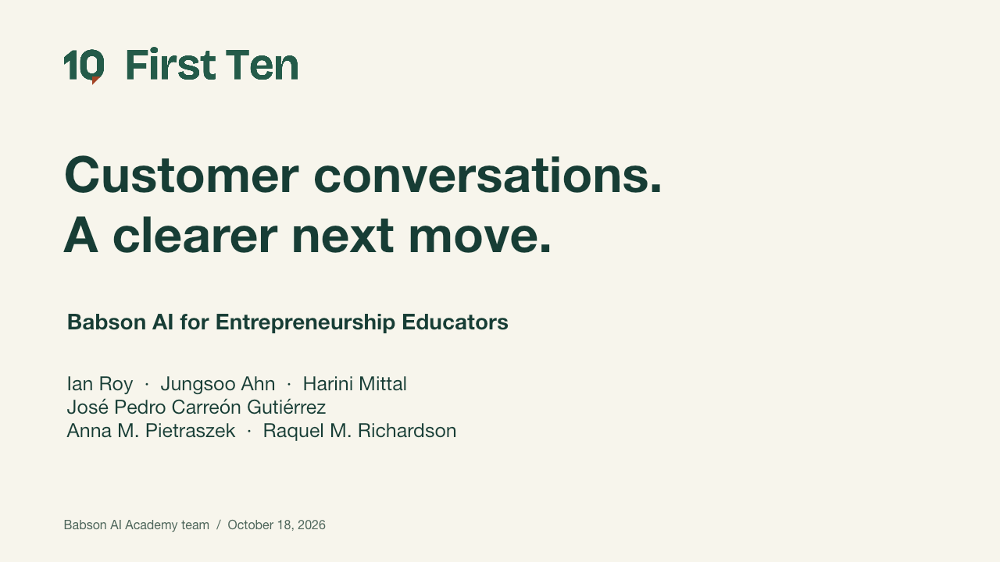
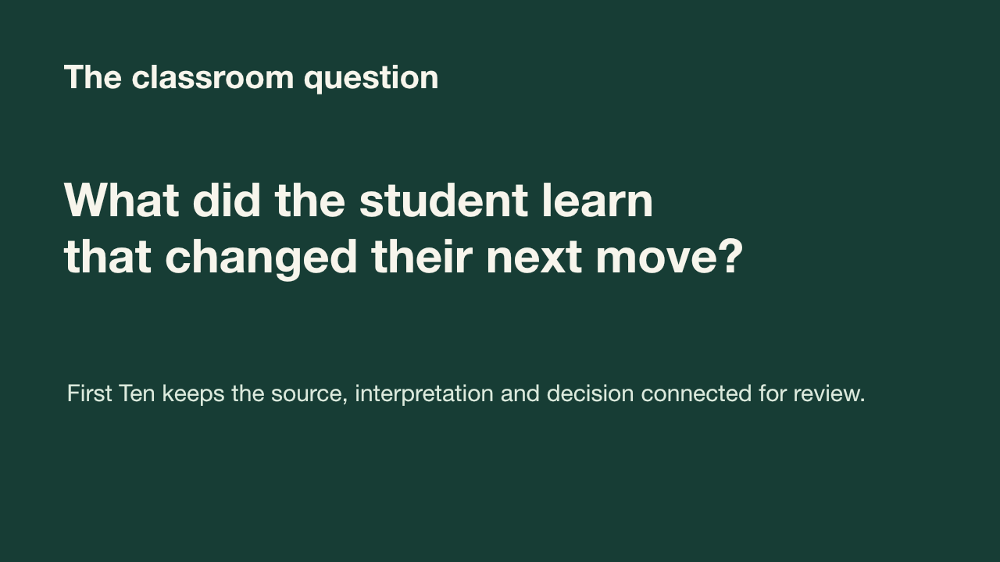
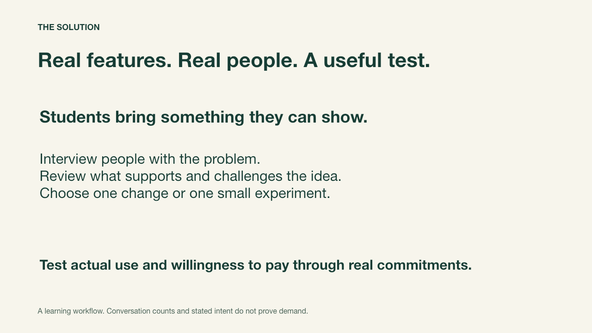
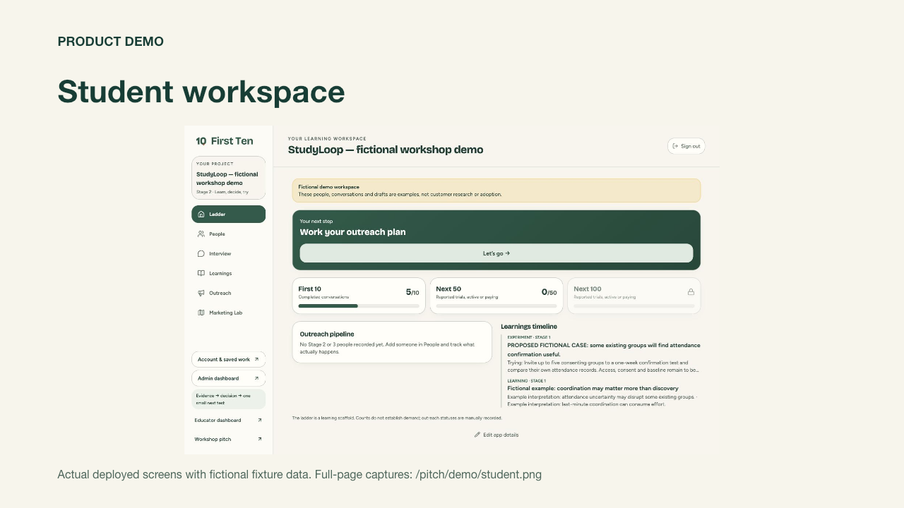
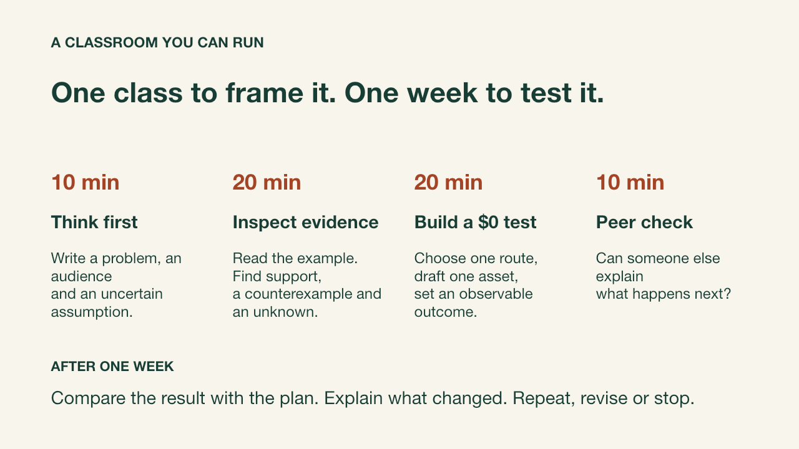
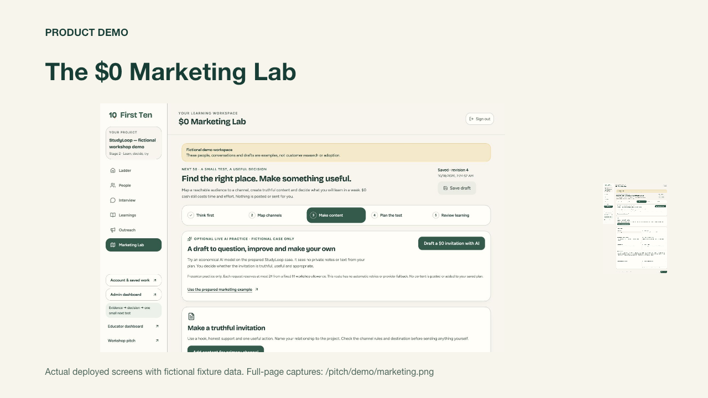
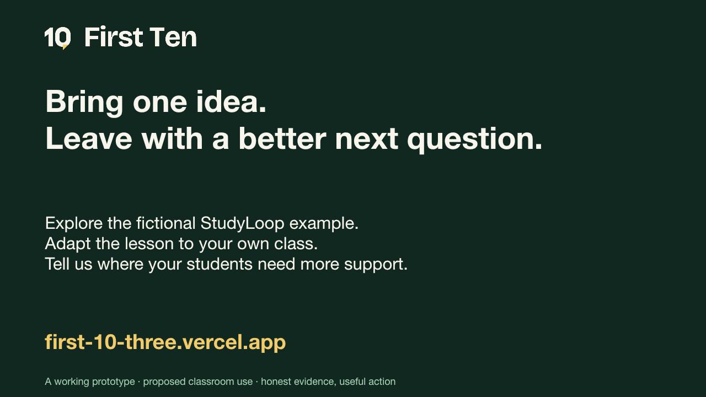
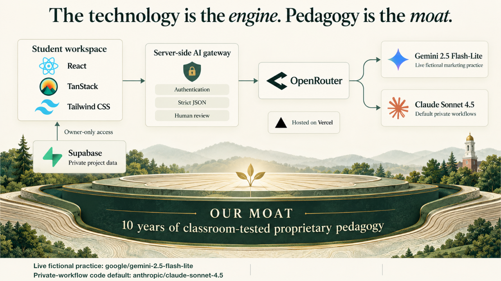
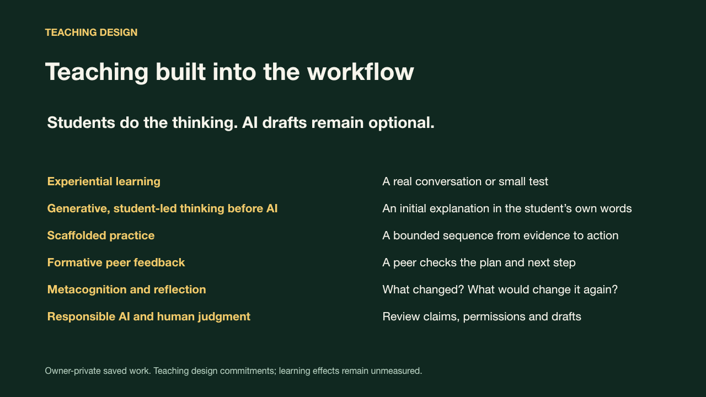
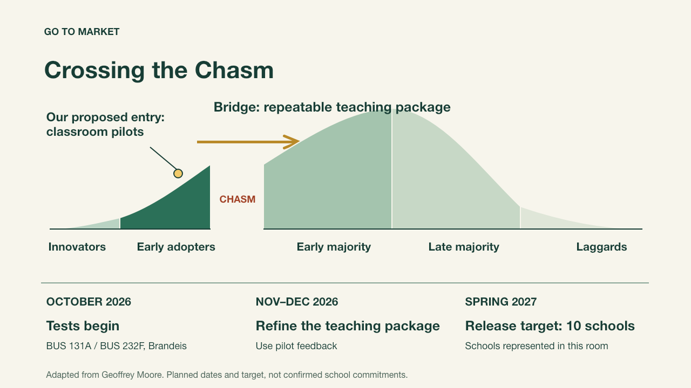

First Ten · workshop pitch













Use Left/Right arrows, Home or End. Print includes all thirteen slides.
90-second fallback script
First Ten helps students take the next step after building a prototype. Choosing whom to approach, knowing what to ask and facing uncertain demand can be difficult. That is the teaching problem we want to investigate.
The workflow connects a real conversation to a reviewed interpretation and a small test. Students look for counterexamples, test meaningful use and investigate willingness to pay through real commitments. StudyLoop is a fictional worked example, with no customer outcome implied.
The deployed app includes private saved ideas, an interview and learning workflow, a manual five-step Marketing Lab and private teacher planning. The educator class examples are fictional. Admin shows protected aggregate counts. Presenter-only AI practice uses a fixed fictional case; general marketing AI remains planned.
Students think before AI, check each other’s plans and reflect after a bounded test. Our planned tests begin in October 2026 in BUS 131A and BUS 232F at Brandeis. After November–December refinement, we target a Spring 2027 release to ten schools represented at the workshop. This is a target, not ten confirmed commitments; no learning gain is established. Which student decision would you want to see more clearly?
Workshop release snapshot, 2026-10-18. Editable primary deck remains in Spaces; this companion is a presentation and offline fallback. Sources: Babson teaching methods and EEF metacognition guidance. EEF addresses school settings, not measured outcomes for First Ten.